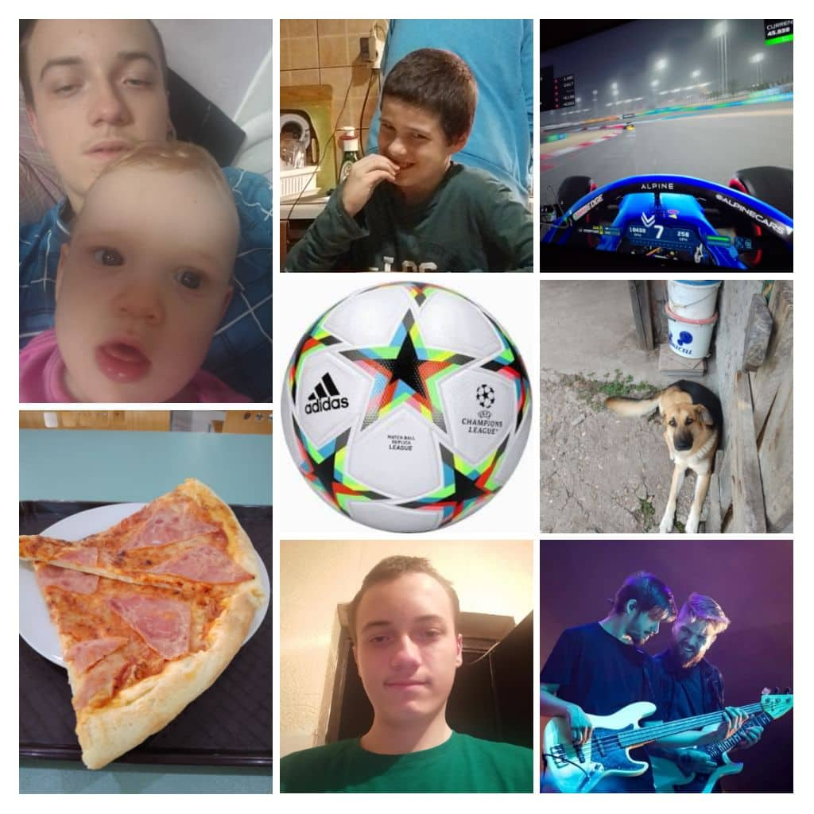

<DOCTYPE html>
    <html lang="hu">
    <head>
        <meta http-equiv="X-UA-Compatible" content="IE=edge">
    <meta name="viewport" content="width=device-width, initial-scale=1.0">
<link rel="shortcut icon" " sizes="180x180" href="favicon_package_v0.16(1).zip">
<link rel="icon" type="image/png" sizes="32x32" href="img/favicon-32x32.png">
<link rel="icon" type="image/png" sizes="16x16" href="img/favicon-16x16.png">
<link rel="manifest" href="img/imgsite.webmanifest">
<link rel="mask-icon" href="img/safari-pinned-tab.svg" color="#5bbad5">
<meta name="msapplication-TileColor" content="#da532c">
<meta name="theme-color" content="#ffffff">


    <style>
        ul {
  list-style-type: none;
  margin: 0;
  padding: 0;
  overflow: hidden;
  background-color: #2DECD3;
}

li {
  float: left;
}

li a {
  display: block;
  color: white;
  text-align: center;
  padding: 14px 16px;
  text-decoration: none;
}

li a:hover:not(.active) {
  background-color: #EC2D2D;
}2

.active {
  background-color: #2D57EC;
}
</style>
        <meta charset="UTF-8">
        <meta name="viewport" content="width=device=width, initial-scale=1.0">
   <ul>
         <li><a class="active" href="index.html">Főoldal</a></li>
       <li><a href="keplink.html">Képlinkes feladat</a></li>
        <li><a href="lista.html">Listás feladat</a></li>
         <li><a href="órarend.html">Órarendes feladat</a></li>
        <li> <a href="urlap.html">Ürlapos feladat</a></li>
       <li> <a href="évszakok.html">Évszakos feladat</a></li>
       <li> <a href="footer.html" > Footer</a></li>
       
        </ul>
    
          <title>Dezső Ádám oldala</title> 
    </head>
    <body>
        <style>
          body{
                background-color:#87EC2D
            }
        </style>    
          
          <h1>Dezső Ádám</h1>
          <h2>Dezső Ádám</h2>
          <h3>Dezső Ádám</h3>
          <h4>Dezső Ádám</h4>
          <h5>Dezső Ádám</h5>
        <h6>Dezső Ádám</h6>

     <br>
 

    
          <p>EZ AZ ÉN CSALÁDOM</p>
          

           
           
    
           
        <footer>
      <p>Author:  Dezső Ádám Péter<br>
      <a href="https://github.com/dezsoap/dezso.git">https://github.com/dezsoap/dezso.git</a></p>
    </footer>
    </body>
    </html>
      
